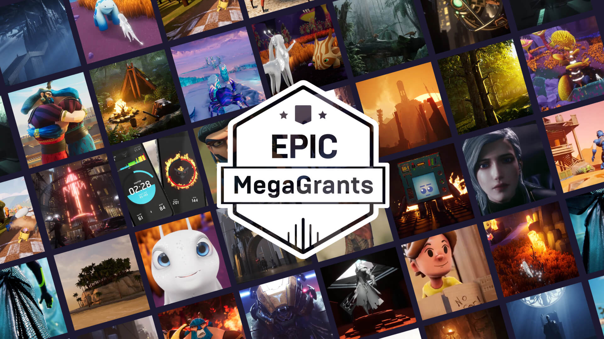
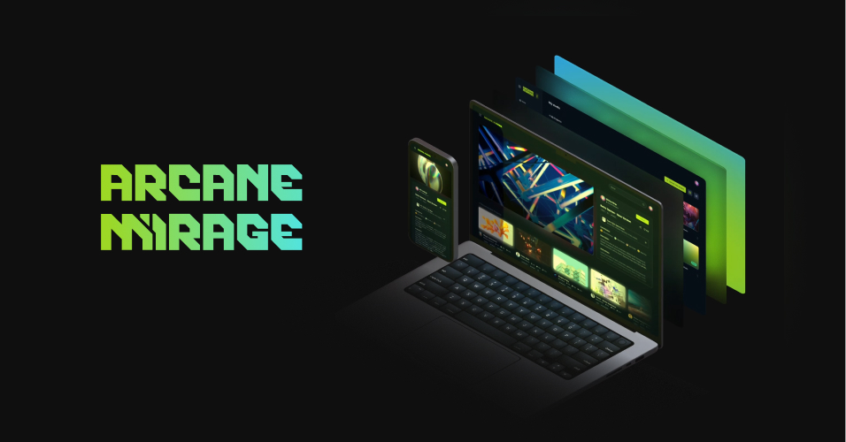

Virtual Concert | Experience
Se imagina un concierto como experiencia completamente virtual desarrollada en el motor Unreal Engine y distribuida ya sea mediante la tecnología Pixel Streaming (en la nube) o en una versión empaquetada para su distribución y ejecución en computadoras individuales.
Basado en los eventos de Fortnite y en previos eventos similares, se planea replicar a una escala asequible y realizable. Igualmente se plantea la posibilidad de vender "entradas" con la finalidad de financiar futuras ediciones del festival, pues se imagina este mismo como un evento recurrente que se supere a sí mismo constantemente.
Igualmente se puede imaginar el concierto como un juego o experiencia interactiva, etc.
Tiempo de Producción
4 Meses - Tiempo Óptimo | 6 - 8 Meses - Tiempo Promedio
Recursos y Características
Epic MegaGrants
Epic MegaGrants es un programa de subvenciones que Epic Games otorga a proyectos creativos, innovadores y notables creados con Unreal Engine. El proyecto planteado buscará aplicar a este programa para conseguir apoyo tanto económico como técnico del equipo de evangelistas de Epic y Unreal Engine.
Arcane Mirage
Arcane Mirage demuestra las capacidades de la tecnología "pixel streaming", la cual permite el “gaming en la nube”. Es una plataforma que despliega proyectos empaquetados en un servidor, transmitiendo video y audio a cualquier reproductor web, eliminando limitaciones de hardware.
Plan de Desarrollo
1. Formación del Equipo
El primer paso para la creación del festival virtual es la conformación de un equipo especializado y comprometido con la visión del proyecto. Se priorizará la búsqueda de desarrolladores con experiencia en tecnologías clave como Niagara para efectos visuales avanzados, Substrate para el manejo de materiales realistas y complejos, Networking para la correcta sincronización de eventos en tiempo real, y MetaSounds para el diseño de audio dinámico y reactivo.
2. Evaluación de Enfoques Tecnológicos
Una vez conformado el equipo, se explorarán diferentes enfoques para la construcción del sistema de visualización interactiva. Se estudiarán las siguientes opciones:
- Sistema Reactivo Dinámico: Un sistema que responde en tiempo real a los estímulos de la música y otros inputs.
- Sistema Pre-cocinado: Donde se precalculan y preparan los efectos y visuales, reduciendo la carga en tiempo real.
- Machine Learning y Learning Agents: Evaluación del uso de Inteligencia Artificial para crear un sistema dinámico e interactivo que aprenda y se ajuste en tiempo real, utilizando las herramientas avanzadas de Unreal Engine.
3. Selección de Artistas y Consideraciones Legales
Simultáneamente, se trabajará en la selección y contacto con los artistas invitados. El proceso incluirá la revisión de los sets, géneros musicales y temáticas que se alineen con el concepto del festival. También se tomarán en cuenta las implicaciones legales, como los contratos de derechos de autor, licencias para la música, y la transmisión en plataformas digitales.
4. Desarrollo del Entorno 3D y Escenario
El desarrollo del entorno virtual será un proceso central y se llevará a cabo en paralelo con la planificación artística. Este incluirá la creación de escenarios 3D detallados, que capturen la esencia del evento, integrando sistemas avanzados de luces, pirotecnia, partículas y animaciones. Se garantizará que el entorno sea inmersivo y dinámico, brindando una experiencia visual y sensorial de alta calidad.
5. Integración de Sistemas Audiovisuales
Se trabajará estrechamente en la sincronización de la música con los efectos visuales, utilizando las herramientas de MetaSounds para crear un diseño de audio que reaccione en tiempo real a los cambios en la música y al entorno. Asimismo, se implementarán sistemas de iluminación, partículas y pirotecnia que se adapten a los ritmos y melodías.
6. Pruebas y Optimización
Antes de la presentación del festival, se realizarán varias rondas de pruebas para asegurar que el sistema funcione correctamente y sin problemas técnicos. Se analizarán aspectos como el rendimiento en diferentes dispositivos, la experiencia del usuario y la capacidad del servidor para manejar grandes cantidades de participantes.
- Se trabajará con Epic Games en caso de buscar la distribución para dispositivos independientes.
- Se trabajará en conjunto con Arcane Mirage en caso de elegir la distribución vía Pixel Streaming / en la nube para evaluar la capacidad de la plataforma.
7. Presentación y Lanzamiento
Finalmente, se organizará la presentación del evento virtual, asegurando una experiencia inmersiva y memorable para los asistentes.